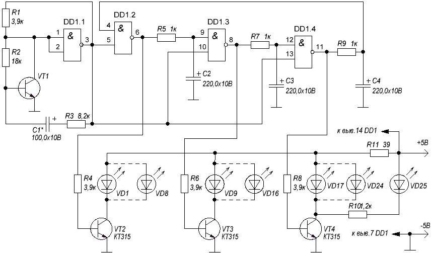

Мини-гирлянда
Условно схему мини-гирлянды можно разделить на три части:
- генератор тактовых импульсов на DD1.1,
- "силовая" часть на транзисторах VT2-VT4, которым подключается нагрузка (светодиоды),
- "переключатели" на DD1.2-DD1.4 с RC-цепочками R5C2, R7C3 между ними для задержки включения транзисторов.
Схема работает следующим образом: генератор подает импульсы, DD1.2 сразу срабатывает и открывает транзистор VT2, затем заряжается C2 и как только напряжение на нём достигнет такого уровня, что оно будет принято за "1", то на выходе логического элемента "И" DD1.3 появится также логическая "1", которая и откроет VT3. Тоже самое происходит с DD1.4. В результате создается ощущение бегущих огней. Частота переключения регулируется подбором C1.

Рис. 1 - Схема электрическая принципиальная мини-гирлянды
Таблица 1
| Обозначение | Наименование | Номинал | Количество | Примечание |
|---|---|---|---|---|
| C1 | Конденсатор электролитический | 100 мкФ/10В | 1 | |
| C2-С4 | Конденсатор электролитический | 220 мкФ/10В | 3 | |
| R1, R4, R6, R8 | Резистор постоянный | 3,9 кОм | 4 | |
| R2 | Резистор постоянный | 18 кОм | 1 | |
| R3 | Резистор постоянный | 8,2 кОм | 1 | |
| R5, R7,R9 | Резистор постоянный | 1 кОм | 1 | |
| R10 | Резистор постоянный | 1,2 кОм | 1 | |
| R11 | Резистор постоянный | 39 Ом | 1 | |
| VD1-VD25 | Светодиод | АЛ307БМ | 25 | |
| VT1-VT4 | Биполярный транзистор | КТ315А | 4 | КТ315Б, КТ315B |